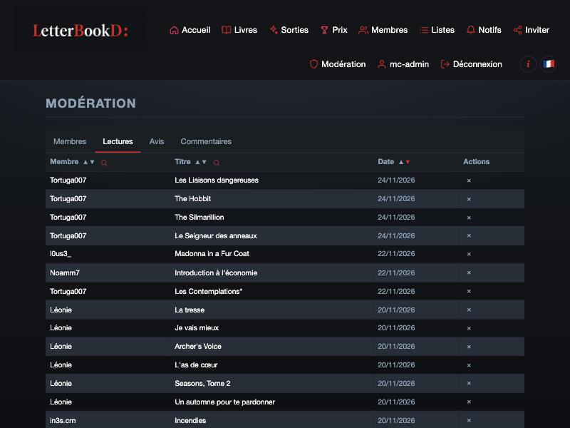

Modération — Lectures Réservé aux administrateurs
À quoi ça sert : Lister chaque enregistrement de lecture (membre × livre) du club. Permet de supprimer une fiche de lecture si elle est en doublon, manifestement fausse, ou abandonnée.

Parcours
Tableau : Membre (pseudo), Titre (livre), Date (quand la lecture a été enregistrée), Actions (croix pour supprimer). Mêmes patterns de tri et filtre que l'onglet Membres. Supprimer une lecture retire aussi l'avis qui y était attaché, mais pas les commentaires des autres membres sur cet avis (ils deviennent des commentaires orphelins qu'il faut traiter dans l'onglet Commentaires).
Chaînes d'action
Chaque ligne décrit un déclencheur dans l'interface, ce qu'il ouvre (modal ou formulaire), et l'effet produit.
| Déclencheur | Modal / Champs | Effet |
|---|---|---|
| Icônes de tri/filtre | — | Même mécanique que pour l'onglet Membres. |
| Bouton croix (×) sur une ligne | Formulaire POST confirmatif. | Supprime la fiche de lecture ET son avis attaché. Les commentaires restent mais pointent vers un avis supprimé. |
Filtre
Le filtre fonctionne de la même façon que dans l'onglet Membres : voir la figure de la page Modération — Membres.